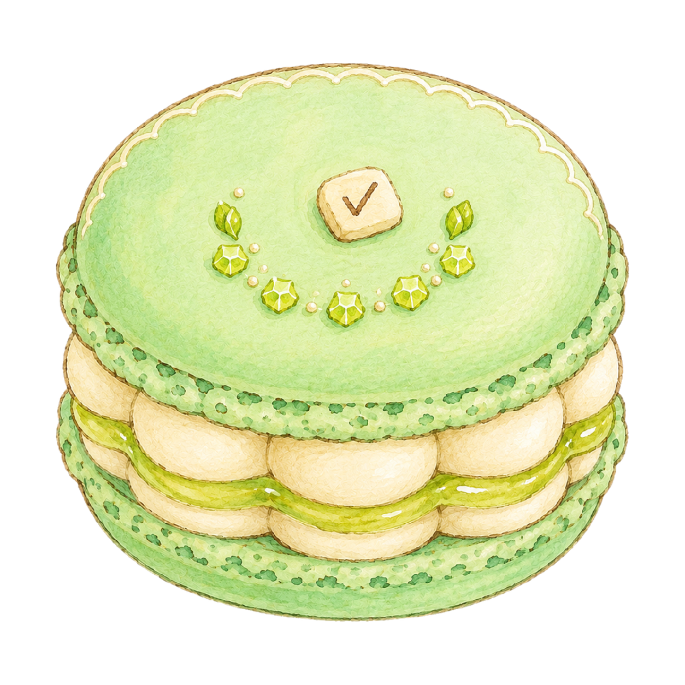
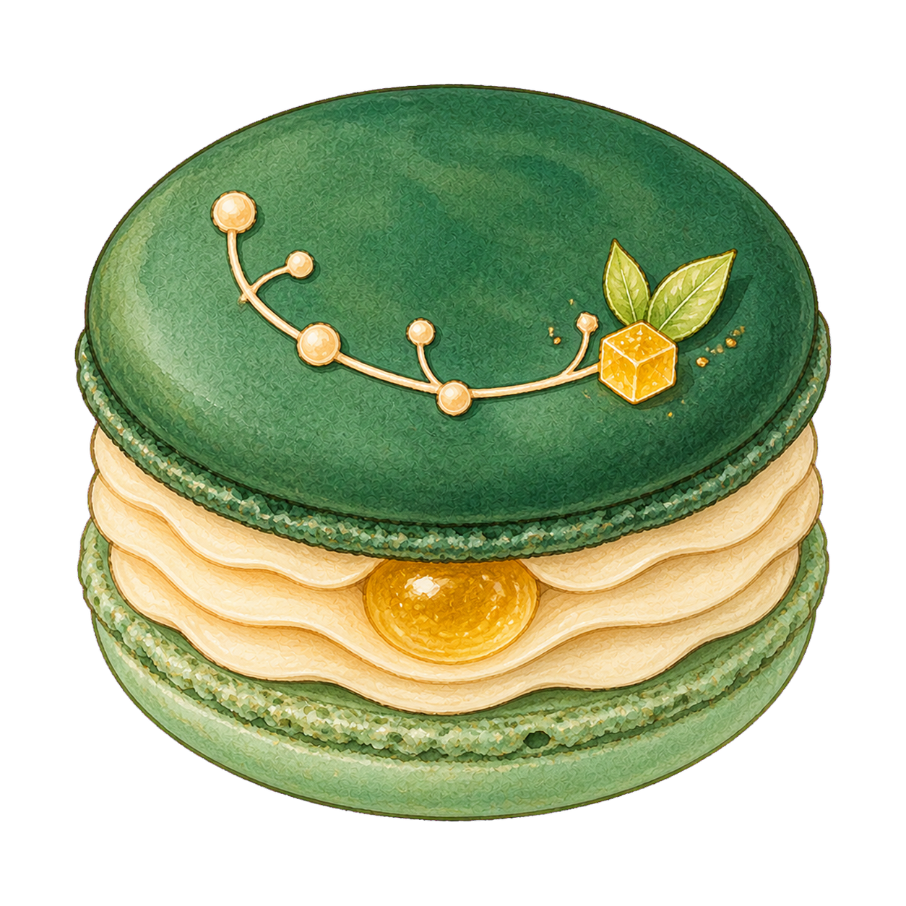
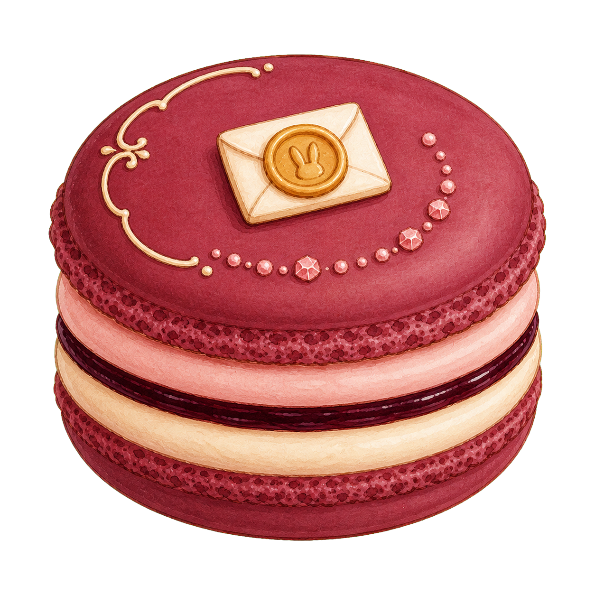
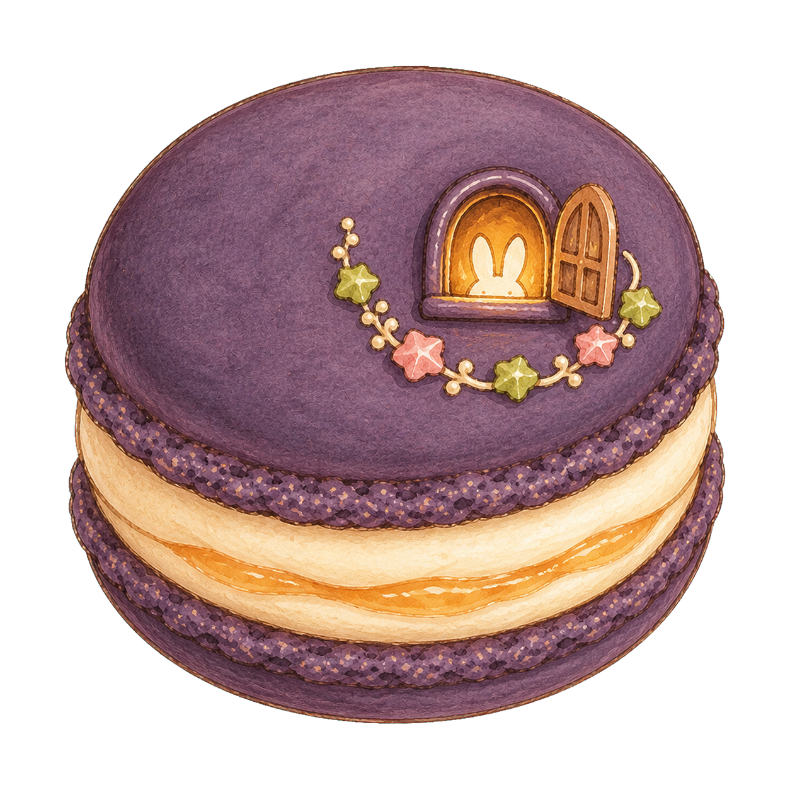
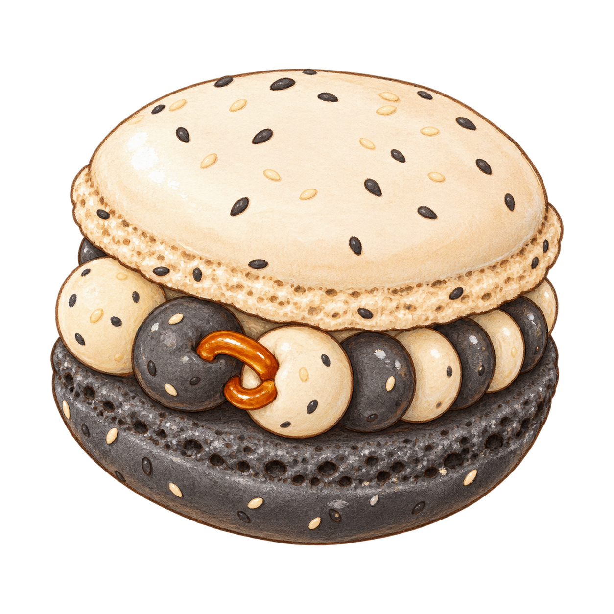
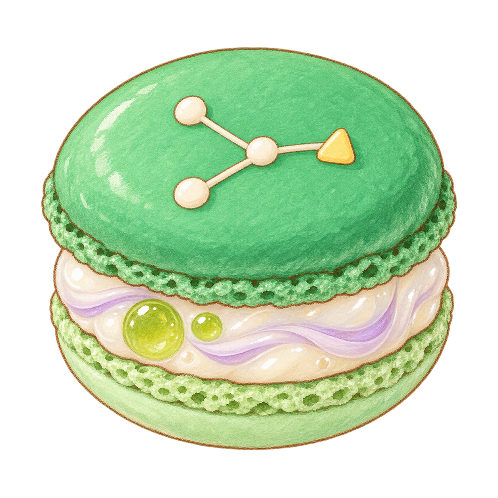
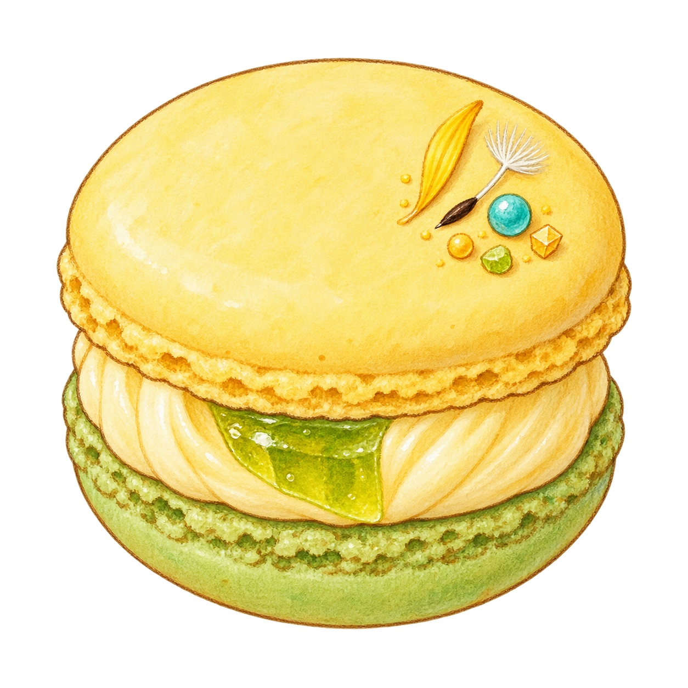
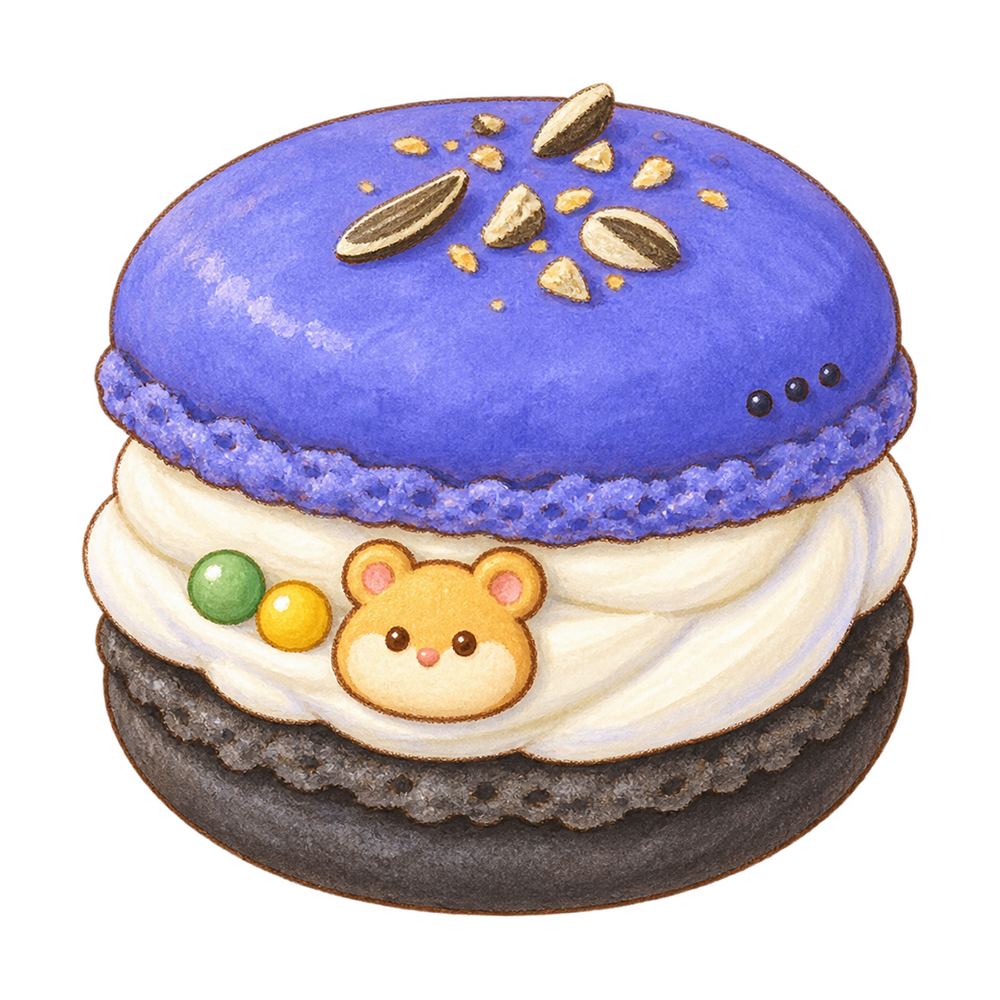
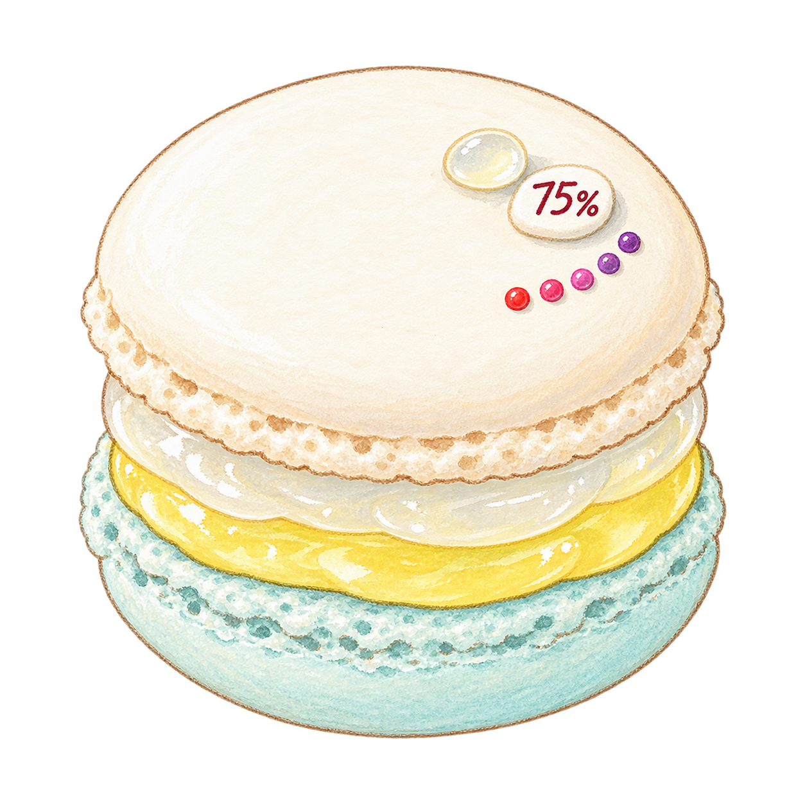
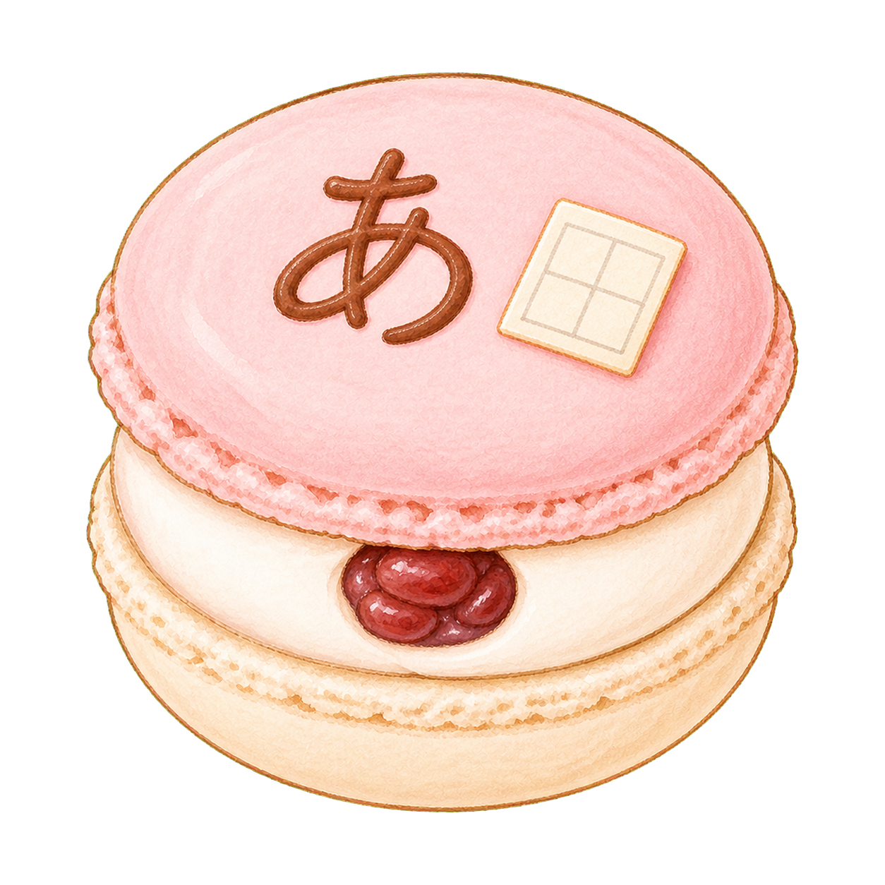

Portfolio selection · 01—10
十顆作品，一盒收藏。
把一路做過的工具、實驗和小作品，做成十顆有不同個性的馬卡龍。每一層口味，都留著它真正想解決的問題。
10 projects
3 collections
Made with care










A little box of ideas, experiments, and memories.
The collection
每一顆，都有自己的內餡。
從實用的日常工具、認真的技術實驗，到仍然讓人微笑的早期練習。這些作品不需要長得一樣，也能在同一盒裡好好相處。
招牌款
Signature · 4
01
Signature
Frozen Rabbit Workshop
開心果・青檸・白巧克力
把龐大而混亂的 FFXIV 製作與採集備料，整理成清楚、可執行的準備路線。
查看專案 ↗
02
Signature
Frozen Rabbit Tome
深焙抹茶・柚子金砂
在多個採集狀態與取捨之間求解、比較，並把值得保留的策略寫進自己的手冊。
查看專案 ↗
03
Signature
Boundary Notes
黑醋栗・玫瑰伯爵
一個安靜、尊重且不評判的私密空間，幫助人把感受與界線整理成能溝通的話。
查看專案 ↗
04
Signature
Emu Rabbit Github io
暮色杏桃・蜂蜜玫瑰
一扇微微打開的窗，讓人從程式與作品之外，也能靠近創作者真實的生活與想法。
查看專案 ↗
技術實驗
Experiment · 3
05
Experiment
LinkArray
黑白芝麻・鹽焦糖
探索一種能在鏈結節點與快速隨機讀取之間，重新排列與切換的資料結構。
查看專案 ↗
06
Experiment
Vue Router Rule
青葡萄・荔枝・紫羅蘭
讓複雜的路由判斷即使經過多次分岔，仍然能被讀懂、除錯與維護。
查看專案 ↗
07
Experiment
Dandelifeon
蒲公英蜜・青蘋果
用三種搜尋演算法，在植物、魔力與棋盤規則之間尋找更好的解。
查看專案 ↗
早期小作品
Classic · 3
08
Classic
nAnB
藍莓優格・葵花子
把規則型的猜數字遊戲，變成和一隻有點嘴壞、又很可愛的鼠鼠聊天。
查看專案 ↗
09
Classic
75 Alchohol
白葡萄・檸檬蘇打
以清楚可見的液體比例，直接完成一個實用的酒精稀釋與濃度計算。
查看專案 ↗
10
Classic
50 Hiragana Test
櫻花牛奶・紅豆
一個字、一張練習格，簡單而親切地陪人練習日文五十音。
查看專案 ↗
A small note
甜點只是入口，作品才是內餡。
這十顆馬卡龍不是與作品分開的裝飾。外殼留下第一印象，內餡說明真正解決的問題，頂部的一個小記號則保留最值得記住的性格。它們來自不同時期，也有不同份量；放在一起時，仍然是一位創作者一路走來的收藏。